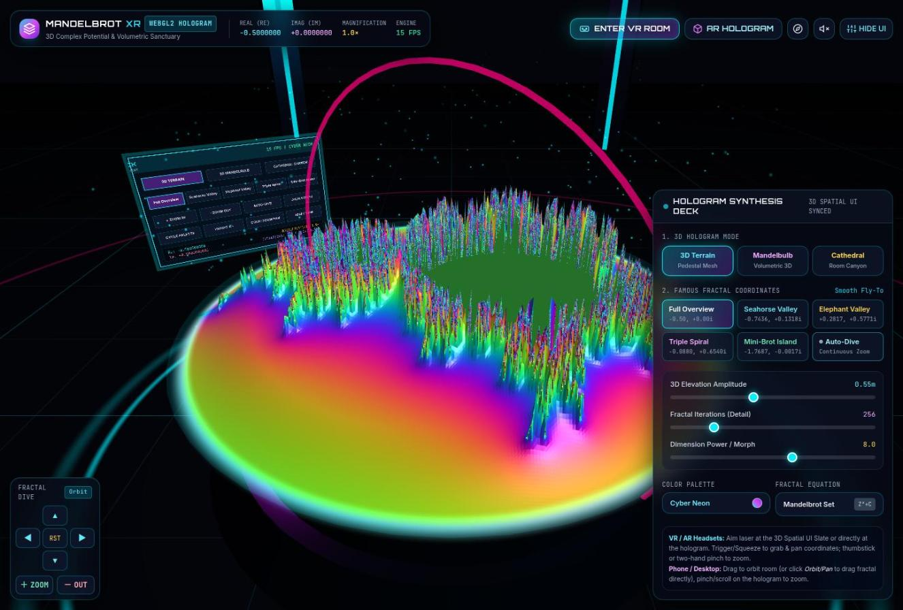
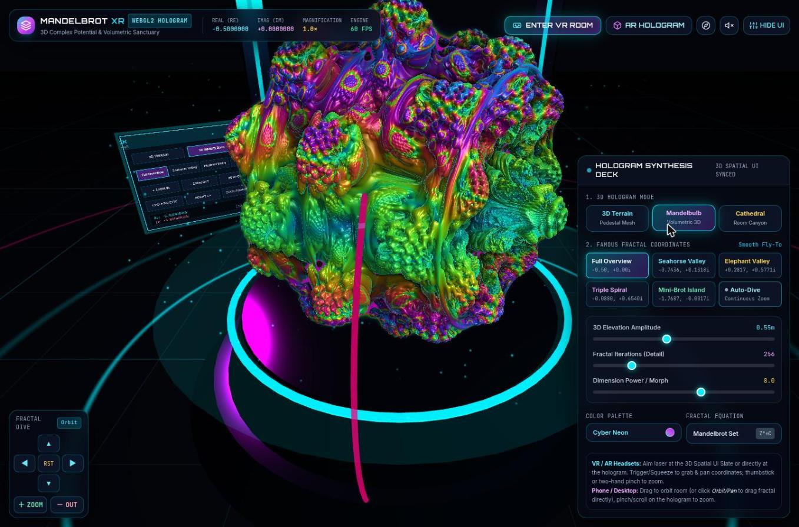
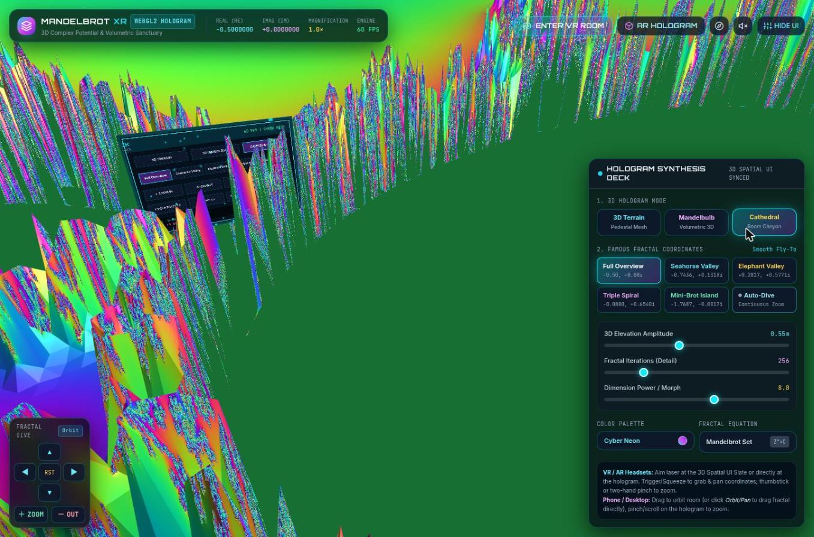
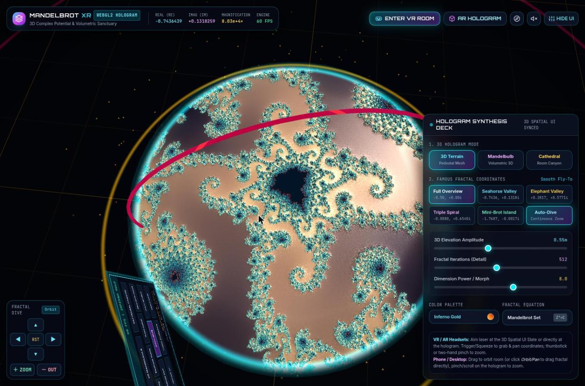
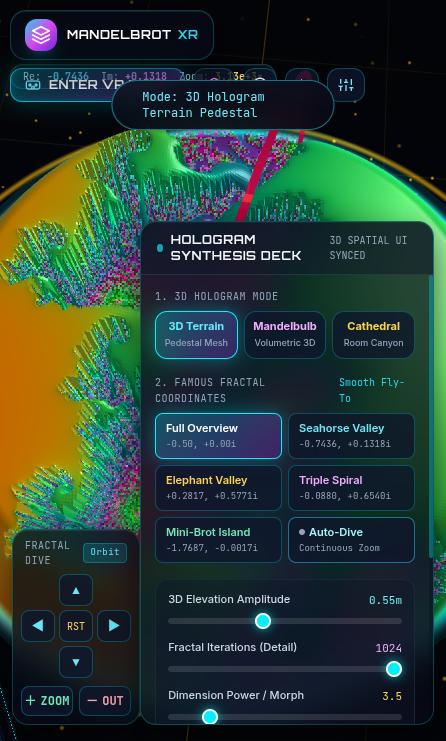
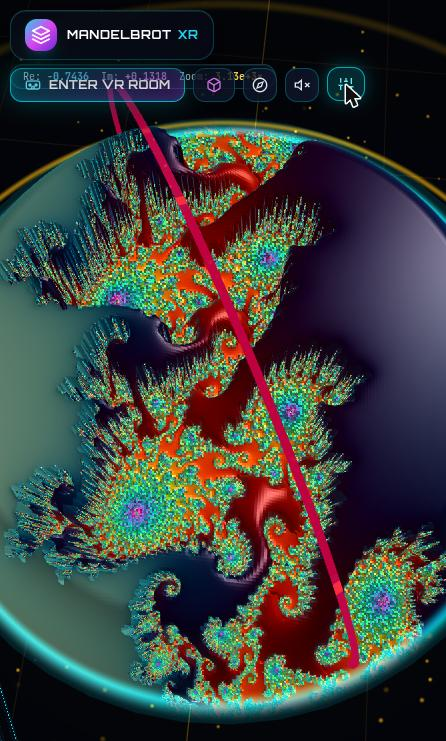

Phase 1 · Browser review
Browser Review — candidate-08 is Gemini 4 Argon · v1
- Blind id
candidate-08(what the reviewer was told)- Candidate
- hidden in blind viewGemini 4 Argon · v1 ·
Google-Web-Gemini4Argon-High-v1 - Prompt
- v1
- Review type
- Browser (Review/Browser-Review/ GitHub)
Revealed mapping: candidate-08 = Gemini 4 Argon · v1 (Google-Web-Gemini4Argon-High-v1), from
ReviewOrchestrator/blind-mapping.json GitHub.
Overall score
7/ 10 overall score
Parsed as the first number of this line, verbatim:
## Overall score: 7 / 10
Review, verbatim
The reviewer's REVIEW.md as written (its heading is shown above). REVIEW.md GitHub
| Criterion | Score | One-line reason |
|---|---|---|
| 1. Loads & renders | 9 | DOMContentLoaded about 160 ms. The 3D scene was up within the first screenshot, with no errors (only the Tailwind-CDN warning). |
| 2. Done-when (desktop-checkable) | 8 | A real 3D "room" with grid floor, pillars, rings and particles, a fractal pedestal and an in-scene 3D control slate. Prominent Enter VR / AR buttons. |
| 3. Visual wow effect | 8 | Mandelbulb mode and the top-down Auto-Dive are striking. Terrain and Cathedral modes are noisy, aliased spike fields. |
| 4. Usability & controls | 6 | Many controls and they work, but the Zoom buttons only act while held, a magenta ring keeps crossing the view, and the phone layout is cramped and overlapping. |
| 5. Robustness | 8 | No console errors during the whole session. After a warm-up dip (27→10 FPS) it held 60 FPS, including 1024 iterations and the Mandelbulb. Resizing was handled. |
| 6. XR readiness & messaging | 6 | VR and AR are offered and fail gracefully with a toast. But the buttons stay enabled even though the isSessionSupported checks return false, the toast is faint and short-lived, and the "Magic Window" gyro toggle reports "Active" on a desktop with no gyroscope. |
Steps performed
- Opened a new tab at http://localhost:8708/ and stubbed alert, confirm and prompt. The page loaded at once (DCL 162 ms). The first frame showed a dark sci-fi room: a perspective grid, cyan and yellow light pillars, magenta orbit rings, floating particles, a glowing pedestal with a Mandelbrot height-field, and a tilted in-scene "3D spatial UI" slate. The HUD showed Re, Im, Magnification and FPS. The console had only the Tailwind CDN "not for production" warning. Three.js r128 comes from cdnjs,
navigator.xrexists, and there is one canvas. - FPS readout. It showed 27, then 15, then 10 FPS in the first seconds (likely shader warm-up), then stayed at 60 FPS for the rest of the session.
- Clicked "ENTER VR ROOM".
isSessionSupported('immersive-vr')is false here. A toast appeared: "IMMERSIVE-VR not supported on this device. Try a VR/AR headset or Magic Window." It is low-contrast and was already fading in a screenshot taken 2 s later. The button stays enabled and is styled as the primary call to action. - Clicked "AR HOLOGRAM". The same kind of toast appeared, for IMMERSIVE-AR. There were no native dialogs and nothing broke.
- Mode: Mandelbulb. This showed a volumetric, ray-marched Mandelbulb with rich iridescent shading on the pedestal. It is the visual highlight and ran at 60 FPS (screenshot 02).
- Mode: Cathedral ("Room Canyon"). The camera ended up among large, jagged, aliased spikes on a flat green floor. It reads as visual noise rather than a recognisable fractal (screenshot 03).
- Presets in 3D Terrain mode. Seahorse Valley (185×) and Elephant Valley (240×) flew there smoothly and updated the HUD coordinates, iterations and amplitude. The terrain is readable but has heavy high-frequency speckle on the spikes.
- Color palette. Clicking cycled to "Inferno Gold" with a toast, and the change was visible.
- Fractal equation. It toggles between Mandelbrot and "Julia Live Morph". At the Elephant Valley zoom, Julia mode turned the whole pedestal into a flat, featureless green and then magenta disc, so it looked broken there. At Full Overview it showed structure, but the palette choice was apparently ignored (neon colours while "Inferno Gold" was selected).
- Mouse orbit drag. It orbits the room smoothly. Dragging the camera low gives an edge-on view where the terrain is hard to read.
- Mouse wheel over the pedestal. It zooms the fractal (1.0× to 1.2× for 5 ticks).
- "＋ ZOOM" and "− OUT". Single clicks left the magnification at 1.2× (checked three times). Only pointerdown followed by a 1.5 s hold changed it (1.2× to 8.6×). This hold-to-zoom behaviour is not labelled.
- D-pad arrows. They pan the fractal (Re and Im change).
- Keyboard. "W" panned Im (0.30 to 0.94). "E" and "+" did nothing visible. No keyboard help is shown.
- Orbit/Pan toggle. Switching to "Pan" makes a drag pan the fractal, with a toast "1-Finger Drag: Fractal Coordinates Pan". It works.
- RST. It reset the coordinates but not the camera, so the view stayed edge-on.
- Auto-Dive. It zooms continuously into Seahorse Valley, reaching about 8e4× in roughly 15 s with crisp detail and changing colours (screenshot 04, from top-down). It then loops back to a low zoom. It is the best "wow" moment in Terrain mode, but a magenta orbit ring keeps passing in front of the fractal.
- Sliders. Iterations at 1024 and Power/Morph at 3.5 both updated live, and the Mandelbulb morphed visibly while holding 60 FPS.
- Gyro (compass) button. The toast said "Mobile Gyroscope Look-Around Active" on a desktop that has no gyroscope.
- Audio button. "Harmonic Fractal Telemetry Audio Enabled", then "Audio Muted". It works as a toggle.
- Hide UI / Show UI. It hides the deck and the D-pad. It works.
- Resized to 390×844 (inner viewport 446×741). There is no horizontal scroll. The "Hologram Synthesis Deck" covers about 70% of the screen and scrolls internally. The Re/Im/Zoom HUD text sits underneath and behind the button row (it collides with "ENTER VR ROOM"), and the toast overlaps the buttons. With Hide UI the fractal fills the screen, which looks good, though blocky per-texel aliasing is visible (screenshots 05 and 06).
- Restored the window and reloaded. The scene re-laid out correctly. The console was clean apart from the Tailwind warning, and no ALERT, CONFIRM or PROMPT messages appeared.
- Closed the tab.
Screenshots are in screenshots/: 01-initial-terrain, 02-mandelbulb, 03-cathedral, 04-autodive-topdown, 05-phone-deck, 06-phone-hidden-ui.
Overall score: 7 / 10
Top 5 issues
- Major: the Zoom buttons do nothing on a normal click. In step 12, magnification stayed at 1.2× after three clicks and only changed under a 1.5 s pointer hold. Fix: apply a discrete zoom step (for example ×1.5) on click and keep continuous zoom while held, or label the buttons "hold".
- Major: Terrain and Cathedral height-fields are noisy and aliased. Speckled, single-texel spikes undercut the wow effect in the default mode (screenshots 01 and 03), and the Cathedral camera lands in a jumble of jagged spikes. Fix: smooth or low-pass the height map (continuous escape-time with a log-log term, height clamped near the boundary), add mip filtering or supersampling, and frame the Cathedral camera on a readable vista.
- Major: the phone layout is cramped and overlapping. At 446×741 the deck covers most of the screen, the HUD coordinate row collides with the "ENTER VR ROOM" button row, and toasts overlap the buttons (screenshot 05). Fix: on small screens, collapse the deck into a bottom sheet that starts closed, hide or move the coordinate HUD, and put toasts below the toolbar.
- Minor: XR availability is not reflected in the UI. Both
isSessionSupportedchecks return false, yet the VR and AR buttons look fully enabled. The failure toast is faint and fades within about 2 s. The "Magic Window" fallback it mentions is a hidden compass icon, which reports "Active" even with no gyroscope. Fix: check support at load, show an inline "VR not available on this device" state on the buttons, make the toast persist until dismissed, and only offer the gyro toggle whenDeviceOrientationEventdata actually arrives. - Minor: assorted state and visual glitches. Julia mode at deep presets renders a flat, single-colour disc, and Julia ignores the selected palette. RST does not reset the camera. A magenta orbit ring sweeps through the fractal view. Icon-only buttons have only
title, noaria-label. Tailwind is loaded from the Play CDN, which logs a production warning and needs a network connection. Fix: clamp or adjust the Julia c and zoom, make RST also reset the camera, route the ring around the fractal, add aria-labels, and inline the CSS.
Strengths
- The Mandelbulb mode is a genuinely impressive ray-marched volumetric fractal with rich shading, at a steady 60 FPS.
- It is a coherent "virtual room": grid floor, light pillars, particles, a pedestal, and an in-world 3D control slate meant for XR laser interaction.
- Auto-Dive and the famous-location presets give smooth fly-to animation with a live coordinate and magnification HUD, and Auto-Dive reaches about 1e5× with crisp detail.
- Rich, working controls: three modes, six presets, palettes, a Julia toggle, iteration, amplitude and power sliders, an Orbit/Pan toggle, a D-pad, wheel zoom, audio, and Hide UI.
- Robust: no console errors, no native dialogs, fast load, and resizing is handled cleanly.
Verdict
This is a polished, visually ambitious WebXR fractal room. The Mandelbulb and Auto-Dive views deliver real wow, and the page has a clear, gracefully failing path into VR and AR. The default terrain rendering is noisy and aliased. The Zoom buttons, phone layout and XR-availability messaging need work before it feels smooth on phones and for users who expect the buttons to respond to a click.
Screenshots 6


01-initial-terrain.jpgGemini 4 Argon · v1

02-mandelbulb.jpgGemini 4 Argon · v1

03-cathedral.jpgGemini 4 Argon · v1

04-autodive-topdown.jpgGemini 4 Argon · v1

05-phone-deck.jpgGemini 4 Argon · v1

06-phone-hidden-ui.jpgGemini 4 Argon · v1Prompt
The exact prompt the reviewer received. PROMPT.txt GitHub
Show the full prompt (38 lines)
You are a blind reviewer in a comparison of AI coding assistants. An AI assistant was given the task quoted below. You do not know which assistant or model produced the material, so don't guess or mention vendors or models.
The task given to the assistant (verbatim):
<<<
Create a standalone html file that uses WebXR to visualize the Mandelbrotset in a virtual room. Focus on delivering the highest possible visual wow effect and good usability.
Requirements: Viewable on HMDs like Meta Quest 3, Steam Frame, Pico VR 4 Ultra (not an exhaustive enumeration) and on modern Android and Apple phones.
Done when:
1. A person wearing a VR headset or AR glasses or a mobile phone can open the HTML file on the device (Browser) and enter a virtual room in which the Mandelbrot set is getting visualized in 3d.
>>>
Your material: the delivered HTML file, served by a local static server that the orchestrator has already started:
http://localhost:8708/ (serves index.html of candidate-08)
Use the Claude in Chrome browser tools (mcp__claude-in-chrome__*). If they are deferred, load them first with ONE ToolSearch call, e.g. "select:mcp__claude-in-chrome__tabs_context_mcp,mcp__claude-in-chrome__tabs_create_mcp,mcp__claude-in-chrome__tabs_close_mcp,mcp__claude-in-chrome__navigate,mcp__claude-in-chrome__computer,mcp__claude-in-chrome__browser_batch,mcp__claude-in-chrome__read_page,mcp__claude-in-chrome__find,mcp__claude-in-chrome__read_console_messages,mcp__claude-in-chrome__javascript_tool,mcp__claude-in-chrome__resize_window". Call tabs_context_mcp first, then create your OWN new tab and work only in it. Visit no URL other than http://localhost:8708/. Close your tab when you are done. Native alert/confirm/prompt dialogs block the browser extension. So right after loading (and after every reload), run in javascript_tool: `window.alert = m => console.log('ALERT: ' + m); window.confirm = m => (console.log('CONFIRM: ' + m), false); window.prompt = m => (console.log('PROMPT: ' + m), null);` and read any such messages with read_console_messages. If a page uses native dialogs for its messages, report that as a usability finding. Do not read the HTML source from disk or other files. You may use javascript_tool for light introspection (e.g. whether navigator.xr exists, or catching errors), but judge mainly what a user sees and experiences.
Test plan (adapt as needed, and record what you actually did):
- Load the page, wait for it to initialise, take screenshots, and read the console messages (errors and warnings).
- Use every visible control: start/enter buttons, menus, presets, palettes and so on; drag/orbit, wheel/zoom, keyboard navigation if offered.
- Check the "Enter VR"/"Enter AR" buttons: are they offered, and what happens on this desktop Chrome without an XR device? Is the messaging clear? Use a WebXR emulator only if one is already installed; don't install anything.
- Phone layout: resize the window to a phone-like size (e.g. 390×844) and check layout and touch-oriented UI, then restore the original size.
- Note responsiveness and frame-rate impressions, and anything broken.
You may save up to 6 key screenshots (save_to_disk) and copy them into /tmp/claude-1000/-home-mpuchstein-Dev-AI-MandelbrotXR/14a78f0a-2d81-433c-9df8-b0d851d25219/scratchpad/blind-out/browser/candidate-08/screenshots/ to reference them from the review.
Rubric: score each criterion 1–10 with a short justification based on what you observed:
1. Loads & renders (errors, time to first meaningful frame).
2. Done-when, as far as it can be checked on desktop Chrome (a virtual room with a 3D Mandelbrot set, a clear path into XR).
3. Visual wow effect.
4. Usability & controls (desktop and phone-sized layout).
5. Robustness (console errors, resizing, performance impression).
6. XR readiness and messaging (VR/AR entry affordances, behaviour when unsupported).
List the **Steps performed**, with the outcome of each.
Then add: **Overall score (1–10)**, **Top 5 issues** (each with severity critical/major/minor, location or evidence, and a suggested fix), **Strengths** (up to 5), and a 2–3 sentence **Verdict**.
Output: write the review as Markdown to exactly this file (create the directory if needed):
/tmp/claude-1000/-home-mpuchstein-Dev-AI-MandelbrotXR/14a78f0a-2d81-433c-9df8-b0d851d25219/scratchpad/blind-out/browser/candidate-08/REVIEW.md
Start it with "# Browser Review — candidate-08", followed by a score table (criterion | score | one-line reason). Write no other files except where stated above. Finish by replying with a 3-line summary: overall score, verdict, biggest issue.Links
- Candidate page: Gemini 4 Argon · v1 v1
- Other reviews of this candidate:
- HTML review · overall 6
- Transcript review · overall 4
- Review agent log: TRANSCRIPT.md GitHub
- Review folder: Review/Browser-Review/Google-Web-Gemini4Argon-High-v1/ GitHub
- Blind mapping: ReviewOrchestrator/blind-mapping.json GitHub
- Builder chat transcript: TRANSCRIPTION.md GitHub
Press Reveal names to see the links to the candidate, its folder and its builder transcript.